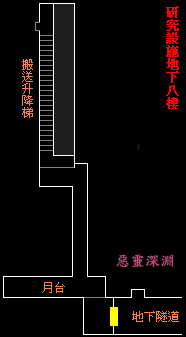
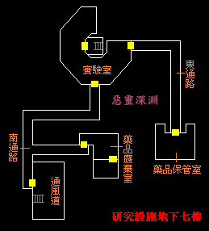

|
惡靈古堡Outbreak----地圖攻略∼零下Easy/Normal
|
此頁面含有日文編碼文字
|
本篇攻略的道具配置以"Normal"為主 ，有時會因為選擇的角色和機率不同而有些許改變；''關於SpecialItems和達成率的詳細介紹，請參
 研究設施地下八樓──地下隧道 / 月台 / 搬送升降梯 使用Yoko以外的角色，會發現夥伴怎麼多了一個人，也就是Yoko，Yoko只會出現短暫的時間，玩家無法和她進行任何互動。 在地下隧道稍等一下，往月台的門隨後就會打開。 月台上發生Yoko遇襲事件，原來Yoko是Umbrella的員工，究竟她和Monica之間的關係是？ 從搬送升降梯爬通風口離開，將隨機前往地下七樓、地下六樓東通路或南通路其中一處。 地下隧道：綠色藥草、鐵棒。 月台：SG手槍（Easy─搬送升降梯前，Normal─Monica出現的地方後面）。
 研究設施地下七樓──東通路 / 實驗室 / 藥品保管室 / 南通路 / 藥品廢棄室 / 通風道 無論之前是否先到地下六樓，地下七樓的主要任務都是調配V-JOLT。首先先到實驗室拿實驗Memo，得知裡面寫的密碼後，到藥品保 管室輸入，並拿取VP-017，再到藥品廢棄室拿UMB No.3（確認同伴的道具，說不定已經拿到手了呢），兩者調和後得到V-JOLT，接著 拿到通風道使用，已經去過地下六樓的玩家，也可以選擇到地下六樓通風道使用，僅關係到達成率的不同。 通風道有一個重傷的人，身上有急救噴霧的話，不妨跟他交換散彈槍。 實驗室：綠色藥草 x 2、地圖、藥瓶（黃）、實驗Memo、45AUTO彈、所內通知。 藥品保管室：藥瓶（灰）、SG手槍、藍色藥草、VP-017。 南通路：鐵棒。 藥品廢棄室：紅色藥草、UMB No.3。 通風道：散彈槍（用急救噴霧交換）。 達成率：在B7F使用V-JOLT、所員Ａ道具取得（散彈槍）、所有MAP入手、取得「實驗Memo」、取得「所內通知」。 SpecialItems：DNA構造的模型 、「親子的接觸方法」、「生物的進化」、下水道管理人的傳真、危險的液體、銀框的相片、小型按摩 器、帥氣的太陽眼鏡。
研究設施地下六樓──南通路 / 安全中心 / 東通路 / 休憩室 / 通風道 地下六樓的任務是拿到活門轉盤，另外安全中心的控制台輸入密碼可以打開地下五樓電算室、地下四樓東側通路的門，不過密碼要在 地下五樓才拿得到，除了輸入密碼之外，之後還會有其他方法可以打開這兩扇門。 活門轉盤的位置在安全中心往南通路的門前，牆上有個鐵箱面版，打開鐵箱的方法有二：暴力打開，或是拿在南通路的結凍的扳手， 前往休憩室的熱水槽溶解，就可以用扳手打開鐵箱面板。用活門轉盤打開安全中心中央的門，創造出往地下七樓暢通的路。 使用從地下七樓拿到的V-JOLT後，在地下六樓通風道使用活門轉盤通往地下五樓，自此此項道具就不需要了。 通風道：手槍子彈。 南通路：結凍的扳手、SG手槍。 安全中心：綠色藥草、活門轉盤、手槍彈、地圖、急救噴霧。 東通路：生存小刀、手槍子彈。 休憩室：急救噴霧、藍色藥草、鐵棒、抗Virus劑、扳手（解凍）、散彈槍（鎖住的櫃子，Alyssa）。 達成率：溶解結凍的扳手、使用扳手打開面板、用活門轉盤打開通往地下七樓的門、在B6F使用V-JOLT、所有MAP入手、啟動 「Monica逃走」。 SpecialItems：名牌3、過期的ID卡、Yoko的白衣、備用的眼鏡、方向盤、純白的T-shirt、堅固的手套 、對動作有反應的錶、「快樂的園 藝」、「不變冷的婚姻」、最輕量鞋、「抓住明天！」。
研究設施地下五樓──通風道 / Ｃ區通路 / 非常通路 / Ｂ區通路 / 電算室 這個樓層的目的是登錄指紋，Yoko可以不用來，如果想拿麥林手槍就必須來一趟。 Ｃ區通路的file有關本月PassCode更新，寫著可以打開兩扇門的密碼，要回到地下六樓安全中心輸入。若要選擇另一種方法開門的玩家 ，就不用理會密碼，而是必須先前往地下四樓的旋轉機台拿卡片鑰匙。 非常通路上的職員的Memo務必要拿，否則在電算室就無法登錄指紋。 Ｂ區通路又見一個受傷的人，但是除了Yoko之外，其他人無法做出任何幫助 ，Yoko只要調查，就可以拿到麥林手槍。阻擋著的閘門， 調查旁邊的開關即可打開。 電算室的門若是沒回地下六樓輸入密碼的話，就要到地下四樓拿卡片鑰匙來才能打開，在電算室登錄指紋是必要的動作。 Ｃ區通路：有關本月PassCode更新、綠色藥草。 非常通路：職員的Memo、散彈槍。 Ｂ區通路：藍色藥草、麥林手槍（Yoko）。 電算室：手槍子彈、綠色藥草、藍色藥草。 達成率： 另外兩名夥伴位於地下四樓主通道時，玩家在電算室、卡片鑰匙打開電算室的門、所員Ｂ道具取得（Yoko）、取得「實驗 Memo」、取得「有關本月PassCode更新」。 SpecialItems：西洋棋手錶、針灸、解謎式錶。
研究設施地下四樓──通風道 / 西側通路 / 主通道 / 東側通路 / 培養實驗室 / 低溫實驗室 / 旋轉機台 不打算到地下六樓安全中心輸入密碼的玩家，就要到這裡的旋轉機台拿取卡片鑰匙，才可以打開東側通路的閘門和地下五樓電算室的 門。 在地下五樓登錄指紋之後，若於兩分鐘之內到達主通道，就會發生被大飛蛾襲擊事件（夥伴亦同），因而受困於電算室。 培養實驗室的門只要之前有登錄指紋就可以進去，至於Yoko，因為是Umbrella員工的關係，她的指紋不用登錄也能被認可。 旋轉機台因為氣溫太低結凍無法使用，必須要到培養實驗室拿手持燃燒器，到低溫實驗室使用，關掉冷氣，地下四樓就會開始解凍， 出現機台解凍的動畫後，撿起旋轉機台上的旋轉機台的鑰匙並使用，時間就開始倒數三分鐘，三分鐘結束時，玩家必須在旋轉機台， 否則就會出現被斬殺的動畫而導致遊戲結束。 西側通路：鐵棒、手槍彈。 主通道：散彈。 東側通路：整備職員的日記。 培養實驗室：急救噴霧、藥瓶（灰）、藥瓶（黃）、關於重要實驗體（藥瓶＿灰下面）、手持燃燒器。 低溫實驗室：研究員的遺書、壞掉的散彈槍、急救噴霧。 旋轉機台：綠色藥草、手槍彈、卡片鑰匙、旋轉機台的鑰匙。 達成率：啟動「被大飛蛾襲擊」、用卡片鑰匙打開地下四樓東側通路閘門、啟動「使用手持燃燒器」用鑰匙啟動旋轉機台 、啟動「趕 不上而死亡」、使旋轉機台上升、取得「研究員的遺書」、取得「警備職員的日記」 SpecialItems：名排1、空的墨水匣、沾滿血的白衣、冷凍保存的種子、Monica的髮飾、領子打開的襯衫、運動裝(上)、腹錶 、水色的襯 衫。
研究設施地上旋轉機台 這裡和Ｇ變異體有一場激戰，要好好善用機關車來攻擊Ｇ變異體，機關車開關的位置在地圖右下方，也就是旋轉機台開關的對面，如 果Ｇ變異體被機關車壓到的話就能使牠的生命力大幅減少，在使用一次之後，再使用的話就要等蓄電。不過由於開關的位置很容易被 Ｇ變異體堵住，要小心被圍堵在這裡。 操車場： 救急噴霧x2、散彈、手槍子彈。 達成率：啟動運作機關車、啟動「打倒G變異體」。 SpecialItems：藍色的傘、木屐。 疑難解答
的高台，這裡十分安全 （獵人有可能跳上來，不過機率很低），如果夥伴無視你的呼喚，用「要 求」把他們叫來吧。當夥伴沒有彈藥或是生命力低弱時也比較容易服從玩家的呼喚，若要給他們彈 藥或是恢復藥，不妨等時間快倒數完時再進行。
Easy模式→地下七樓實驗室。 Normal模式→地下七樓藥品保管室。
（使用其他種類一樣可以打開，只是快慢的差別） 未經許可禁止轉載連結 |
||||||||||||||||||||||||||||||
惡靈深淵Biohazard Abyss http://98.to/coolbio